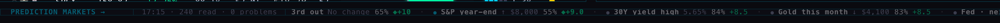
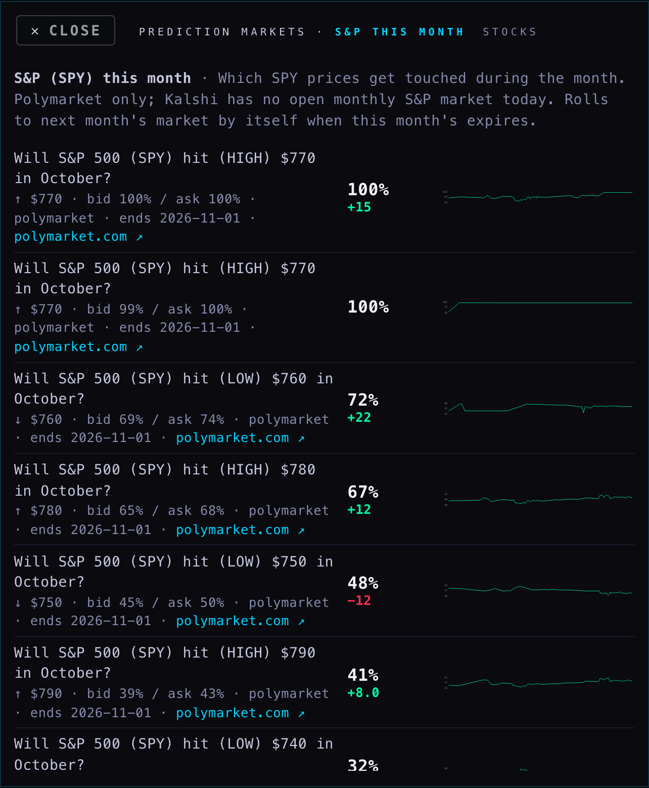
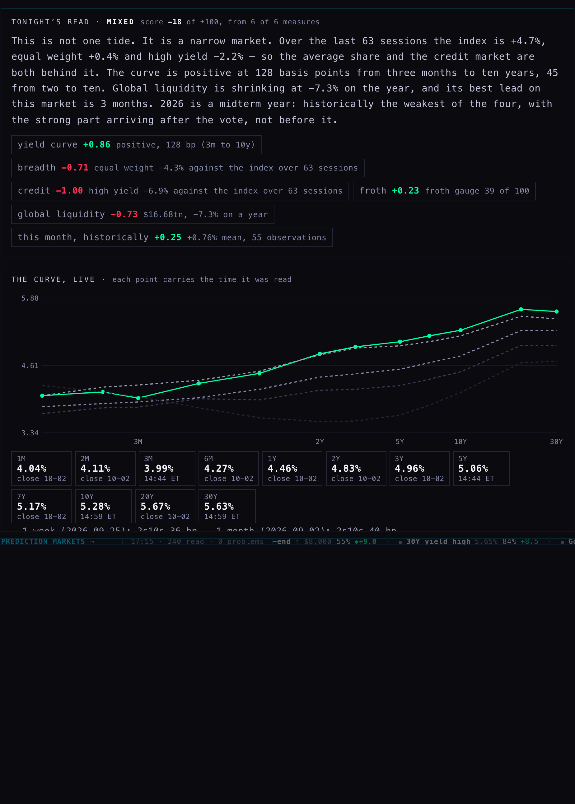
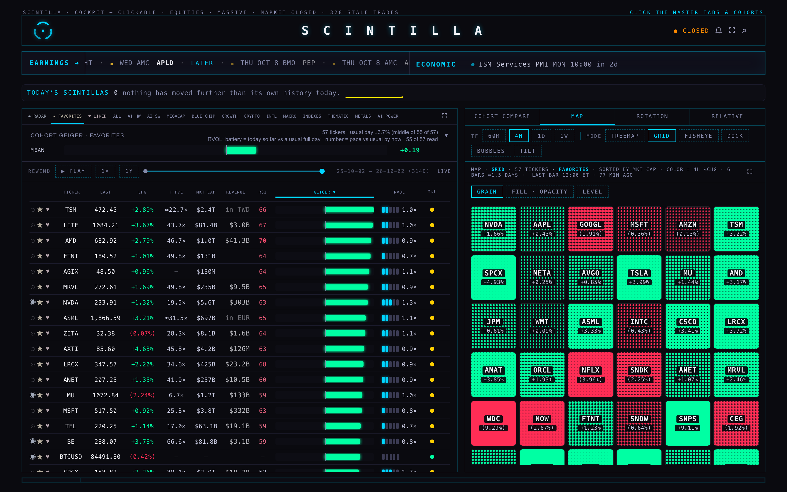
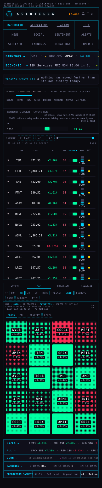
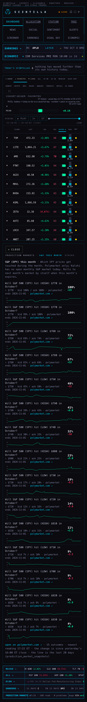

The short name (≤ 18 characters, one per registry topic — "Fed · next", "Gold this month", "China invades TW"). The headline outcome: the one the market rates most likely, skipping anything at 97% or above because that is as good as settled (a "Bitcoin above 74,000 today" at 99.95% says nothing). So the Fed chip reads No change 83%, gold reads its nearest level, a yes/no topic reads its Yes. The probability as a whole percent. The change since yesterday's 16:00 ET close, in points: green up, red down; a flat day is +0.0 and green — there is no grey case anywhere on the Hub.
Each market has a usual day: the middle of its day-to-day moves (close against the previous weekday's close) over the last 20 weekdays, from the stored history. Today's move bigger than that — and bigger than one point, and with at least three days to measure against — and the chip carries a ◆, its dot breathes, and the hover says "12.0× its usual day". Never a sigma. A market that is new this month (the S&P's October ladder rolled in on 1 Oct) has no usual day yet, so a +21 there does not flash — by design, and the hover says why.
The collector writes every 15 minutes (cron 278). The chip at the band's left edge is its newest pass: the time, how many markets it read, how many problems it logged. It turns red when the pass is older than 45 minutes or logged a problem; the hover names the problem (this afternoon's was the retired 1 Oct shutdown market, fixed in R1b). A topic whose newest row is older than the newest pass is normal — rows are written only when a number moved.
Three read-only calls through the page's own client: the latest rows (one call, 229 rows), the newest run (one call), and the history of the ~48 headline markets only (3–4 pages of 1,000 rows). A tapped topic reads its own history (one or two pages). The REGIME card reads the six mapped topics' rows and history. Nothing else was touched: no cron, no function, no table. Off switch in the page: PM_ON = false.
The old card read catalyst_odds (cron 265, every six hours, retired after this ships): six catalysts, 21 markets, half of them on Kalshi. The registry (topics.json, 48 topics, Polymarket only while Kalshi is off) asks every one of those six questions, so no topic the old view showed is missing. What is lost is the Kalshi venue: four of the old readings were Kalshi's (its CPI ladder, its Fed decision, its recession 2026 and 2027) and the registry carries the same questions on Polymarket instead.
| Old heading (catalyst_odds) | What it read | Registry topic(s) now on the card | Same question? |
|---|---|---|---|
| cpi | Kalshi · "CPI above 3.x% for the year ending Sep / Nov 2026" (7 rungs) | cpi-annual (US inflation, the next print, series 10007) + core-cpi | Yes — Polymarket's ladder for the next print; Kalshi's rungs are gone with Kalshi |
| fomc | Kalshi · hike / hold / cut at the October 2026 meeting | fed-2026-10 (series 35, rolls to the next meeting) | Yes — the same five outcomes on Polymarket |
| midterms_house | Polymarket · which party controls the House | house-2026 | Yes — the same Polymarket event (32225) |
| midterms_senate | Polymarket · which party controls the Senate | senate-2026 | Yes — the same event (32224) |
| recession | Kalshi 2026 + 2027, Polymarket 2026 | recession-2026 + recession-2027 | Yes — both years on Polymarket; Kalshi's two readings gone with Kalshi |
| shutdown | Polymarket · "another shutdown by 31 Jan and …the House" (+ the 1 Oct market, resolved) | shutdown (event 101106 + the roll on series 10662) | Yes — the same companion event; the 1 Oct market was retired in R1b |
The Fed: the meeting after, the third meeting out, hikes in 2026, cuts in 2026 · Yields: the 10-year for the rest of 2026, the 30-year's high · Stocks: the S&P by year-end, the S&P this month, the largest company · Economy: GDP 2026, recession by 2027 · Inflation prints: core CPI, core PCE, how high inflation gets · Iran: US–Iran ceasefire, Israel–Iran ceasefire, the blockade's end, an invasion, a nuclear deal · Russia–Ukraine: ceasefire, talks, a NATO–Russia clash, Putin out · Tariffs & trade: the China rate, new deals, the effective rate (Kalshi-only, empty) · Elections: the balance of power · Japan: the BoJ's next two meetings, dollar–yen · China–Taiwan: invasion, blockade, clash · Oil & OPEC: WTI this month, an all-time high, an OPEC exit, Hormuz · Washington: the US debt · AI: the bubble, regulation · the ECB · Gold this month.
Not on the band on purpose: discover (the 15 most-traded markets of the day — today Brazil's election, Bitcoin's ladders, "which company has the best AI model") is not a topic; the R1 rule keeps it for a one-line footer.